Case study · Cabify Spain · Jan to Sep 2026 · flagship project
AQM · Asset Quality Management
Partner fleets wrap their cars in brand or advertising vinyl, and drivers earn a monthly bonus for keeping it in good shape. Checking that used to mean a person looking at photos one by one in a ticketing tool. AQM does it now: capture forms, an AI audit in n8n, one fleet database and a dashboard that operations and ads teams use every day.
The problem
Photos arrived through a generic form and someone reviewed them by hand in the ticketing tool. There was no single record of which car carried which vinyl, in what state, or when it was last checked. The monthly bonus depended on those manual checks, and the ads team ran a separate process for campaign wraps.
The fleet also changes every day: cars change drivers, go inactive or move between partners. Any solution had to follow the car itself, whoever uploaded the photo.
What I built
1. Capture
Four web forms (drivers and three wrapping suppliers) share one HTML and JavaScript codebase, deployed with GitLab CI to the company's static hosting. The subdomain decides which supplier configuration loads. Each photo slot opens the camera with a silhouette of the car, and the browser checks size, brightness and sharpness before uploading: short side of at least 600 px, brightness between 45 and 236 and a Laplacian variance of at least 40. Uploads run in the background, so the user gets an answer straight away.
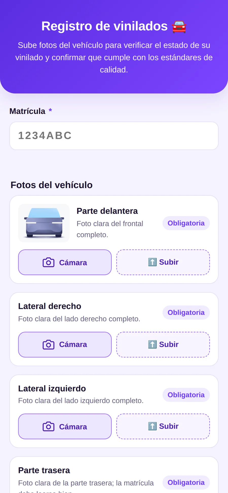
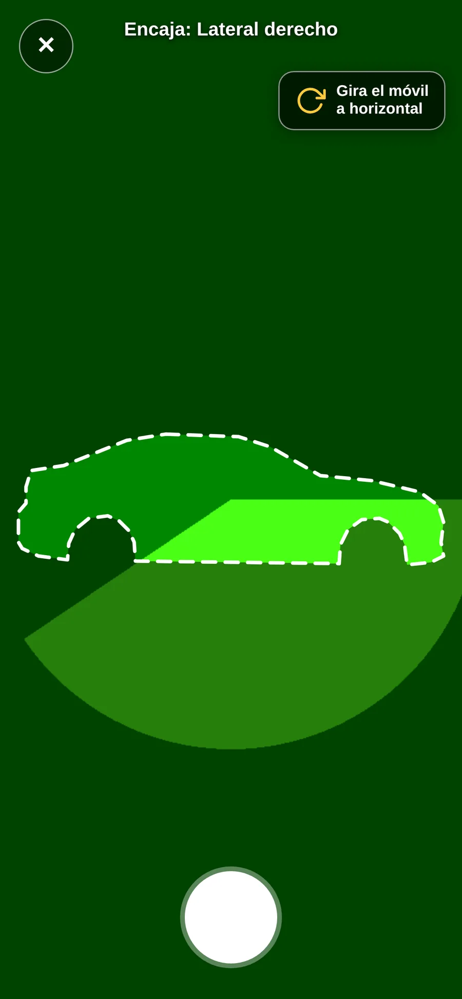
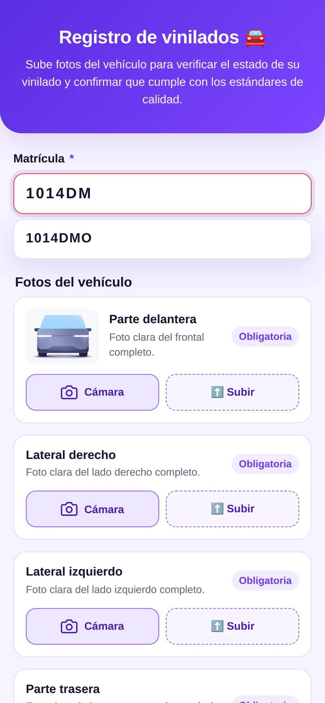
2. Intake
A webhook stores each photo in its own Drive folder and writes the submission to an n8n data table at once. A second webhook reads the plate from the photo while the user is still on the form and warns if it does not match what was typed. It never blocks a submission: some damaged cars cannot be moved to show the plate.
3. AI audit
Every 10 minutes a 74-node workflow takes the pending vehicles one at a time. Each photo (both sides, front, rear, headrest and the regional badge) has its own branch: download, resize to 1024 px, and ask Claude for a fixed 9-field JSON: vinyl type, external brand, side, defect, rear label, regional VTC badge, damage, damage detail and whether the damage sits inside the vinyl area. Side photos also go through the collage audit below. Designs with no reference, such as media campaigns, get a stricter subjective audit. Eight branches merge into one record per vehicle, with tokens and cost logged.
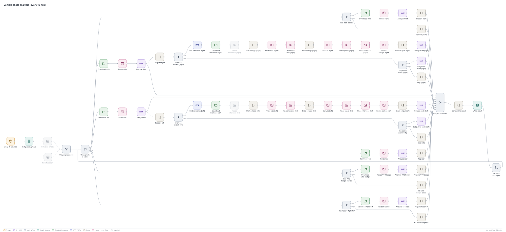
4. Plate check
The model reads the front and rear plates and a small rule set decides between four cases: confirmed; corrected, when front and rear agree against what was typed; conflict, which sends the image and the typed text to Slack with four options and waits up to two days; and unreadable, which keeps what the user typed.
5. One fleet database
Results sync into a single table with one row per plate and 53 columns, enriched with the daily fleet export and a partner's ERP every 10 minutes. The ads campaign is assigned automatically from the ads team's own sheet, so nobody types it twice. An audit expires after three months, and the bonus tab applies one rule: no photo, no payment.
6. The dashboard
An Apps Script web app reads three sources live on every load, with cross filters and CSV export. It replaced a Looker Studio report that needed manual upkeep. When the source moves to the warehouse, only the read function changes.
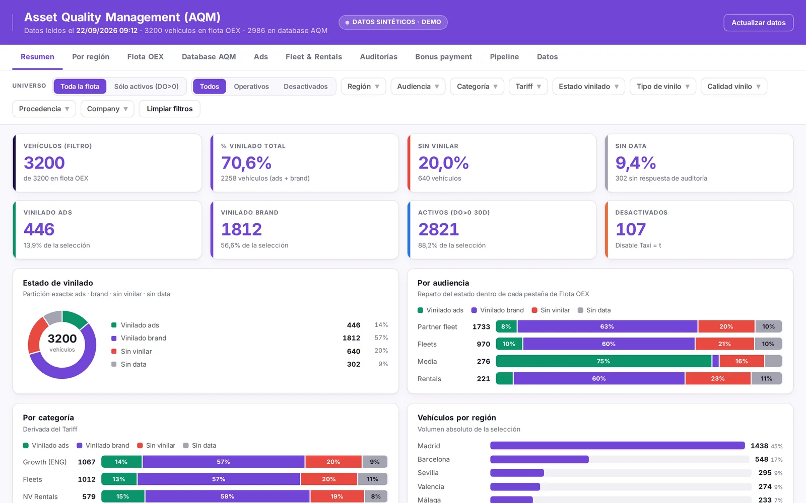
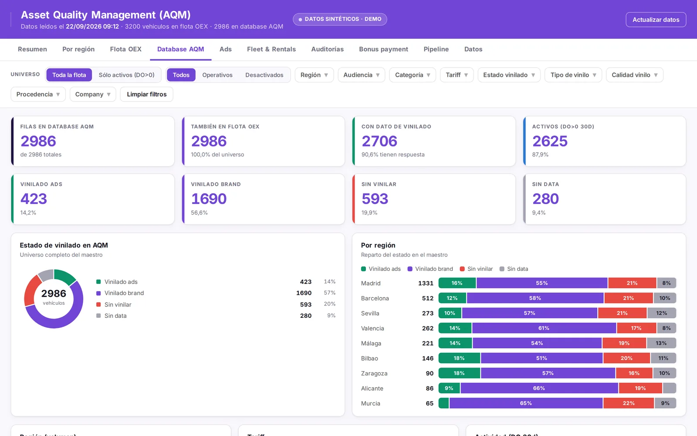
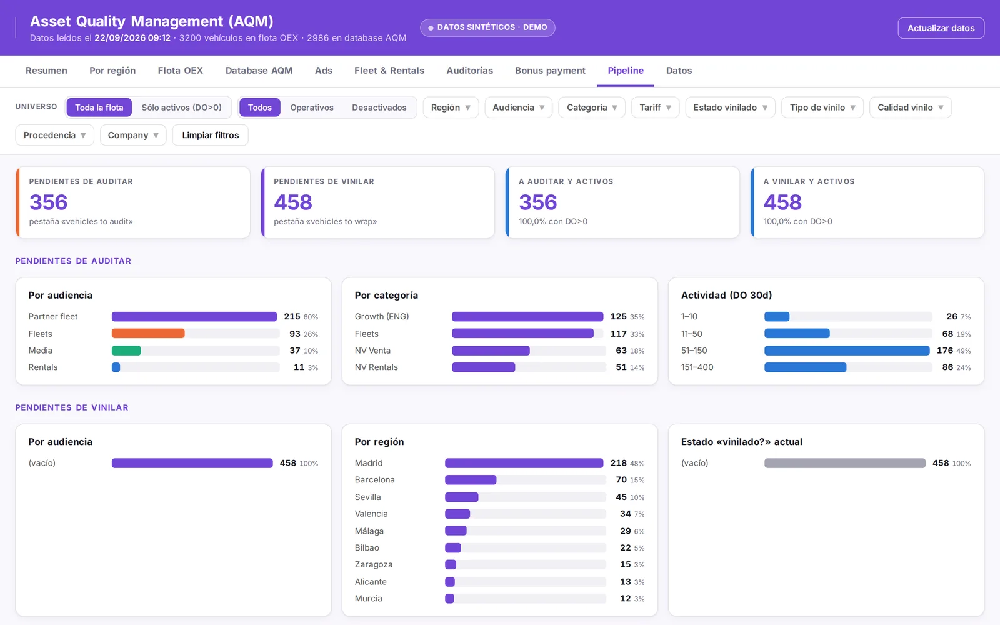
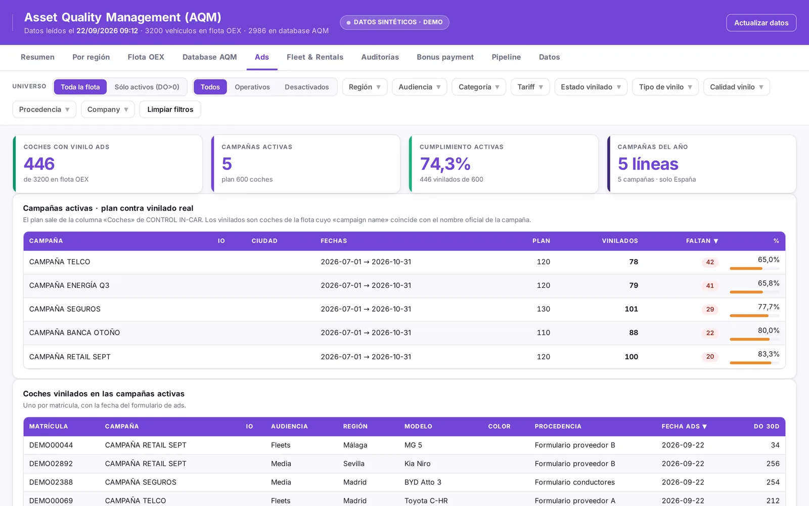
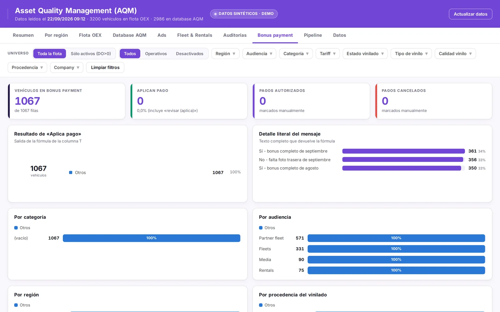
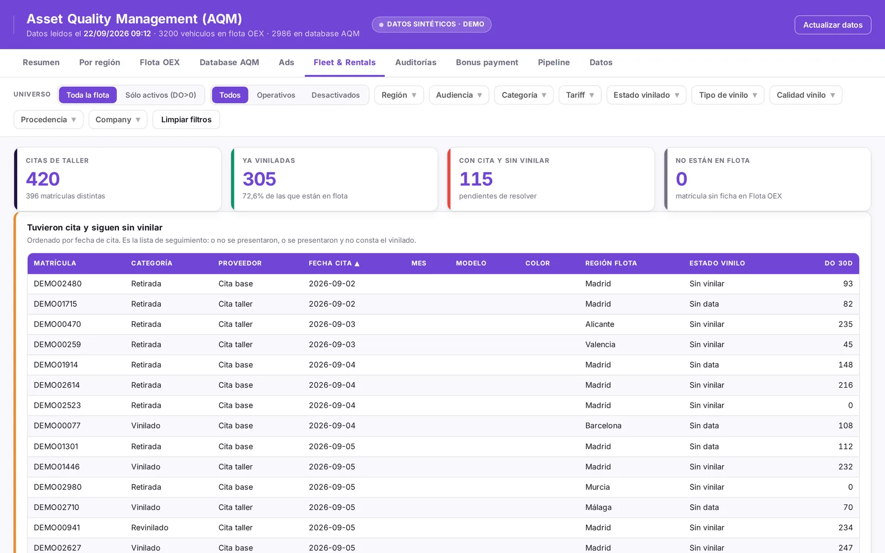
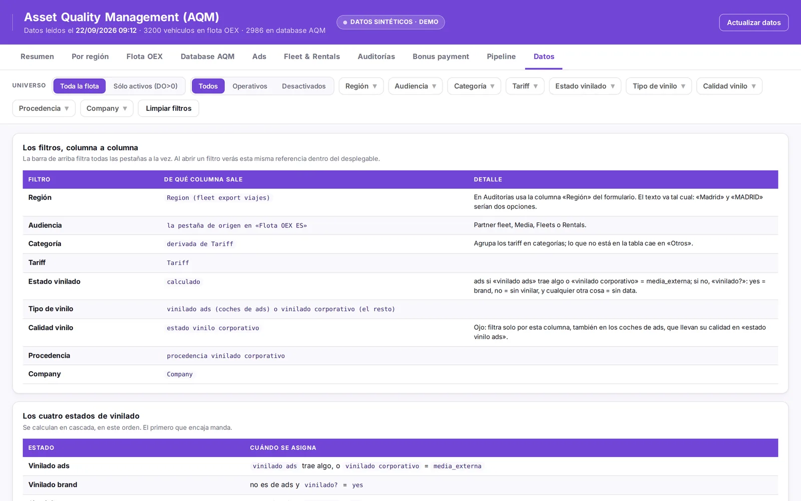
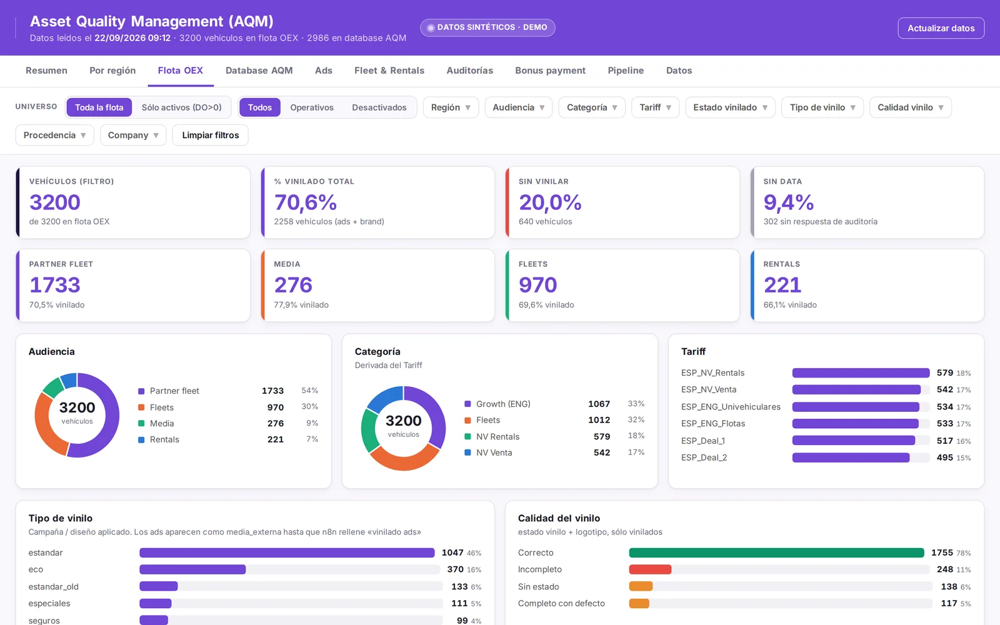
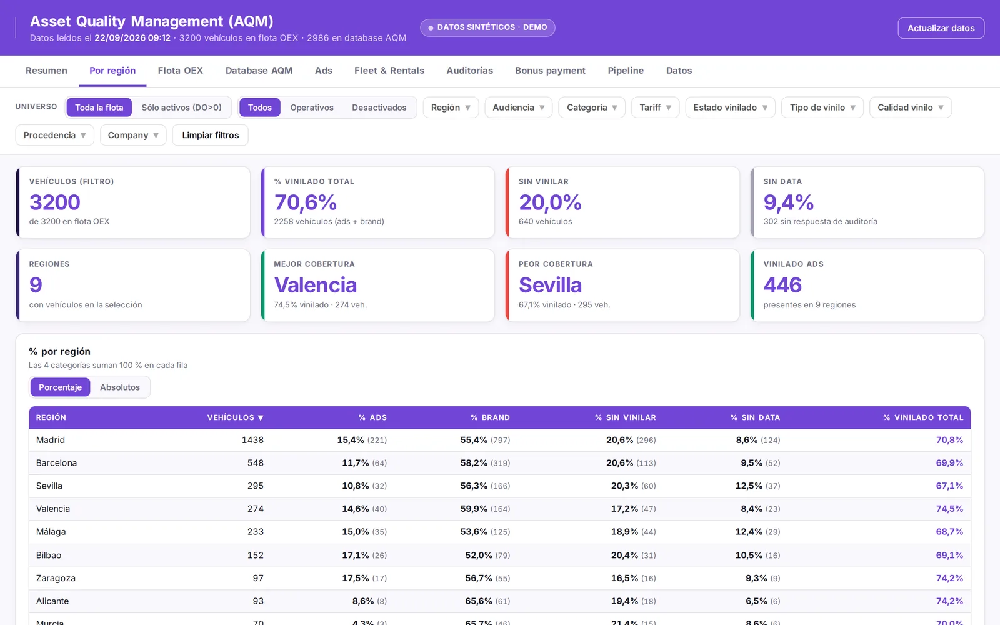
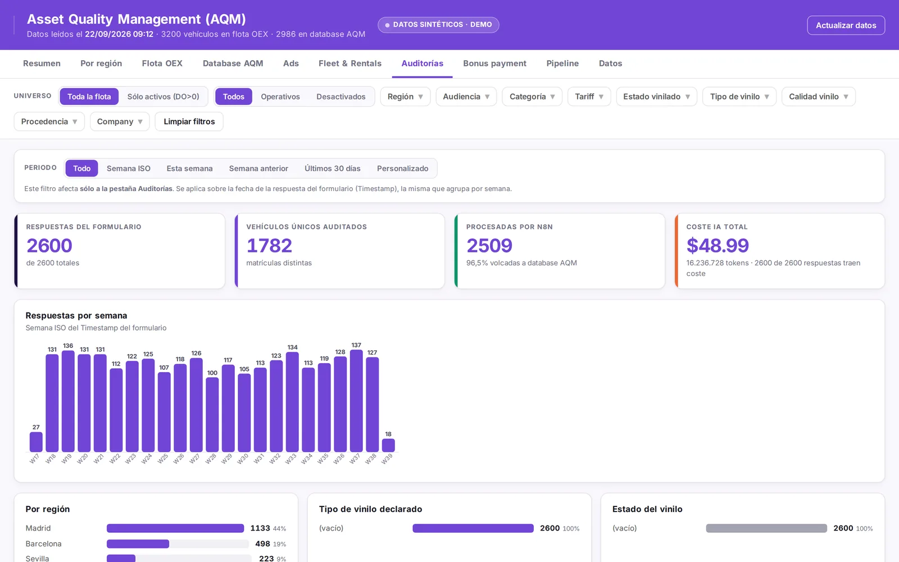
How it got here
This is the third version.
- Jan to Feb 2026, my own models. A labelled dataset, a CNN trained from scratch, YOLOv8 and EasyOCR for plates and a SIFT homography to measure coverage. It ran in batch but confused similar designs. The story continues in the hybrid vision engine.
- Apr 2026, n8n and a vision LLM. Five parallel analyses per image on Claude through Bedrock. Much richer output, and the version I presented at the global Customer Operations all-hands.
- Jun 2026, the spreadsheet broke. The main sheet started returning 503 errors under recalculation load. I put an n8n data table in front as a buffer, recovered about 140 skipped responses and moved the design toward one clean, read-only table.
- Aug to Sep 2026, one circuit. Forms on company hosting, nine fields instead of six, the reference collage, the plate logic, the bonus and the dashboard. From 18 model calls per vehicle in the first n8n version down to about 10.
On 16 September a partner asked in the morning to add the new Madrid VTC badge (the sign private-hire cars must display) to the audit. It was live the same afternoon: a conditional photo in the form, a round camera guide, two new values in the model's taxonomy and no database migration. Barcelona followed the next day with a different badge shape.
Results
- 23,621 photos audited so far, each with a stored verdict per field.
- 97% accuracy against human review. Most of the remaining 3% are photos that are too dark, blurred or cropped for anyone to judge, which is why the form now checks quality before upload.
- 30 to 60 minutes from photo to database, against days of manual review before, and about 1.5 hours a week of supervision.
- Closed as a project on 3 September: the local teams run it as business as usual, and it went to Product as the basis for a native version.
What I would do differently
- Build a labelled evaluation set on day one instead of tuning prompts against examples I knew.
- Get off spreadsheets as the database earlier. The June outage was predictable.
Client, supplier and people names, business figures and internal hosts are left out on purpose. Dashboard and form screenshots are the real tools rendered with synthetic data.